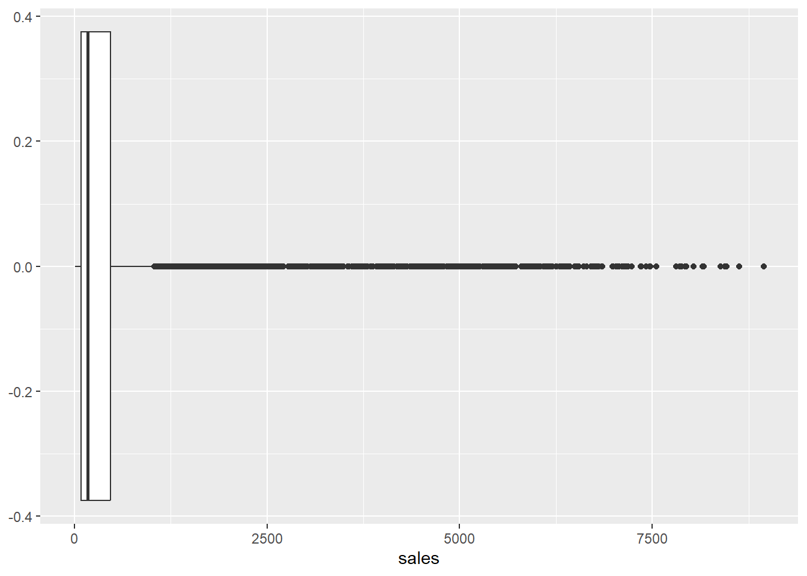
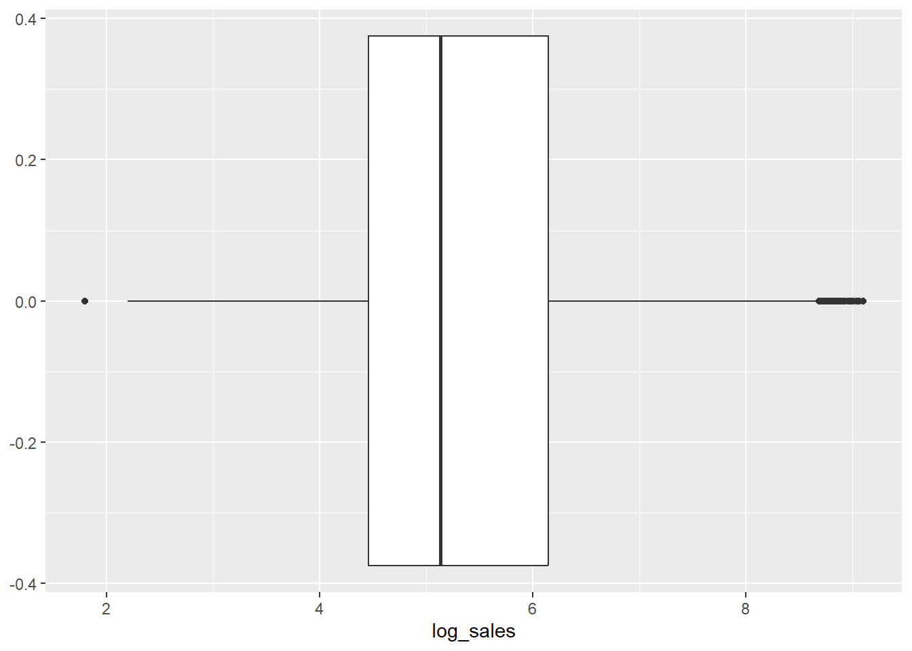
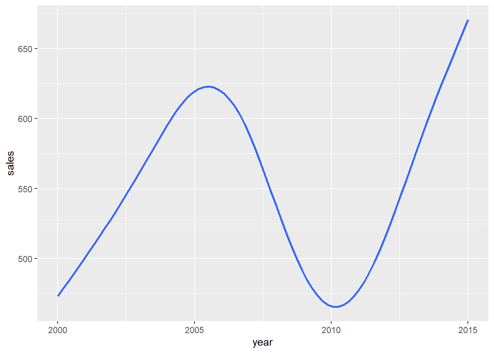
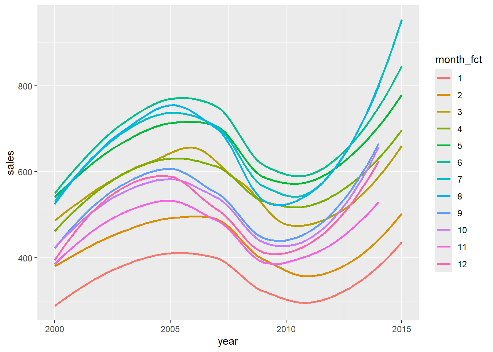
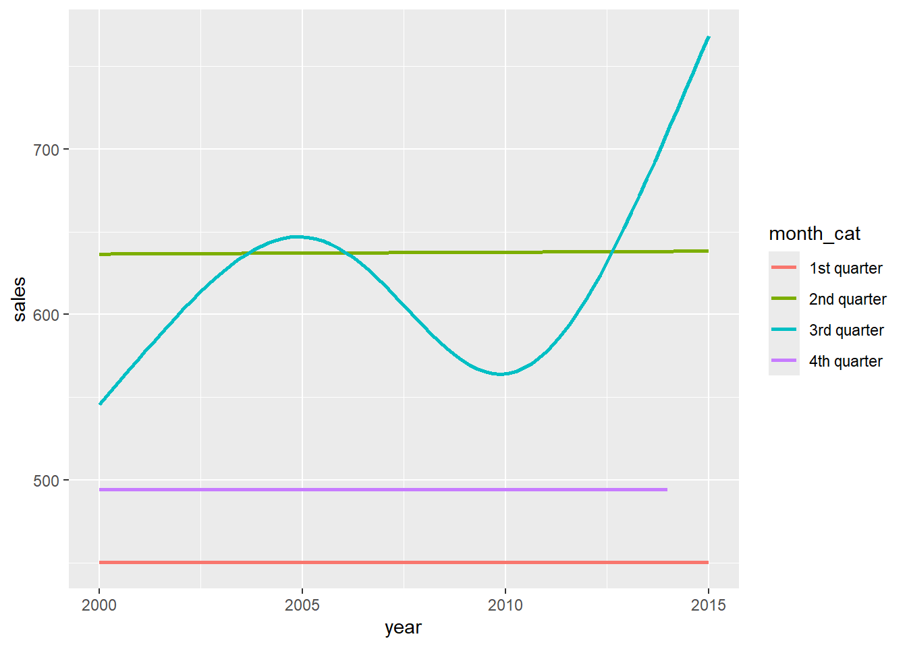
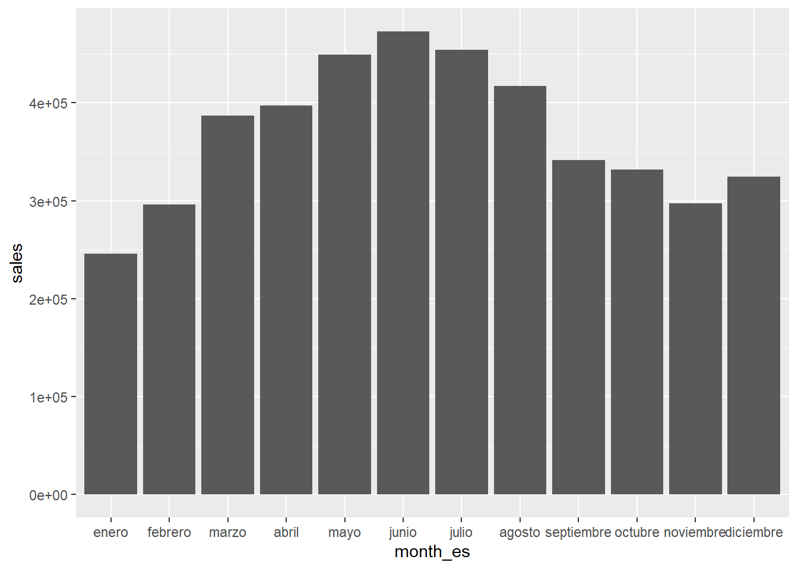

7 More Data Wrangling
In this worksheet, we will:
- Recode some variables for easier visualizations
- Discuss how to handle missing values
7.1 Dataset and Library
We will again consider the built-in dataset txhousing, available in the tidyverse package:
# Upload the package
library(tidyverse)
# Take a look at the first few rows of the dataset
head(txhousing) Let’s further manipulate this dataset and create visualizations.
7.2 Recoding variables
There are many reasons why we may want to recode some variables. This list is not exhaustive!
7.2.1 Log-transformation
When a variable is highly skewed, it might be difficult to “see” the variation:
## Warning: Removed 568 rows containing non-finite outside the scale range
## (`stat_boxplot()`).
For distributions of numeric variables that are heavily right-skewed like this one we can apply a log-transformation:
txhousing |>
# Transform the sales variable
mutate(log_sales = log(sales)) |>
# Use this new variable in a ggplot
ggplot() +
geom_boxplot(aes(x = log_sales))## Warning: Removed 568 rows containing non-finite outside the scale range
## (`stat_boxplot()`).
What is the unit of this new variable?
Write sentences here.
Note that this log-transformation only works for right-skewed data and can only be applied to values greater than 0.
7.2.2 Numeric variable considered as a categorical variable
Some variables are coded numerically but would be better to represent as a category:
## Warning: Removed 568 rows containing non-finite outside the scale range
## (`stat_smooth()`).
txhousing |>
# Color by year as a numeric variable
ggplot(aes(x = year, y = sales, color = month)) +
geom_smooth(se = FALSE)## Warning: Removed 568 rows containing non-finite outside the scale range
## (`stat_smooth()`).## Warning: The following aesthetics were dropped during statistical
## transformation: colour.
## ℹ This can happen when ggplot fails to infer the correct grouping
## structure in the data.
## ℹ Did you forget to specify a `group` aesthetic or to convert a
## numerical variable into a factor?txhousing |>
# Consider year as a factor (a type of categorical variable)
mutate(month_fct = as.factor(month)) |>
# Color by year as a categorical variable
ggplot(aes(x = year, y = sales, color = month_fct)) +
geom_smooth(se = FALSE)## Warning: Removed 568 rows containing non-finite outside the scale range
## (`stat_smooth()`).
The as.numeric() would do the opposite: make a variable numeric.
7.2.3 Recoding values based on conditions
We can recode some values based on conditions with case_when():
txhousing |>
# Recode months into 4 quarters
mutate(month_cat = case_when(
month <= 3 ~ "1st quarter",
4 <= month & month <= 6 ~ "2nd quarter",
7 <= month & month <= 9 ~ "3rd quarter",
10 <= month & month <= 12 ~ "4th quarter")) |>
# Use this new variable in a ggplot
ggplot(aes(x = year, y = sales, color = month_cat)) +
geom_smooth(se = FALSE)## Warning: Removed 568 rows containing non-finite outside the scale range
## (`stat_smooth()`).
Or we can recode each value with recode():
txhousing |>
# Recode months with Spanish names
mutate(month_es = recode(month,
`1` = "enero", `2` = "febrero", `3` = "marzo",
`4` = "abril", `5` = "mayo", `6` = "junio",
`7` = "julio", `8` = "agosto", `9` = "septiembre",
`10` = "octubre", `11` = "noviembre", `12` = "diciembre")) |>
# You can control in which order the levels of a factor variable would appear
mutate(month_es = factor(month_es,
levels = c("enero", "febrero", "marzo",
"abril", "mayo", "junio",
"julio", "agosto", "septiembre",
"octubre", "noviembre", "diciembre"))) |>
# Use this new variable in a ggplot
ggplot(aes(x = month_es, y = sales)) +
geom_bar(stat = "summary", fun = sum)## Warning: Removed 568 rows containing non-finite outside the scale range
## (`stat_summary()`).
7.3 Handling missing values
We talked about removing missing values in calculations with na.rm = TRUE for example. But simply ignoring missing data without trying to understand why the data might be missing could introduce some bias in our visualizations and statistics.
7.3.1 Missing values never go unnoticed
When calculating statistics:
txhousing |>
# Find mean and correlation
summarize(mean_sales = mean(sales),
correlation = cor(sales,listings))When making visualizations:
## Warning: Removed 568 rows containing non-finite outside the scale range
## (`stat_boxplot()`).Before omitting the missing values, we should check how many values are missing and if there is any pattern in the missing data:
txhousing |>
# Split by year/month
group_by(year,month) |>
# Count missing values for each variable
summarize_all(~ sum(is.na(.)))Note that it looks like more recent data is not missing as much as older data.
txhousing |>
# Split by city
group_by(city) |>
# Count missing values for each variable
summarize_all(~ sum(is.na(.)))Some cities don’t have any data missing, others have only a few, and others have a lot!